生成时间：2026-10-10T22:20:53.280481（服务器北京时间）。新计算仅限 TRAIN reference 与 DEV 映射；旧 TEST 已查看，本轮只读重汇总。
本轮计算与审阅已完成：1个S30 NB及5个新增DEV映射全部收敛。当前不支持把K32 abundance用于真实Visium的可靠细胞数量解释或直接进入定量空间pilot。结果更支持整体上皮/数量校准尚未解决，并伴有上皮内部的来源特异混淆；本轮不能判定K32本质上不可区分。建议下一轮仅开展合法G1范围内的有限配对诊断。
计算交付已完成；模型收敛状态和生物学判断分别如下。未启动 G1 或真实 Visium。
| model | status | historical | epochs |
|---|---|---|---|
| S30_G0_REFERENCE | COMPLETED | False | 250 |
| S30_FULL_DEV | COMPLETED | False | 9000 |
| S31_TARGET_UMI | COMPLETED | False | 13000 |
| S31_FIXED_CAPTURE | COMPLETED | False | 13000 |
| S30_TARGET_UMI | COMPLETED | False | 7000 |
| S30_FIXED_CAPTURE | COMPLETED | False | 9000 |
| HIST_MAIN_DEV | COMPLETED | True | 9000 |
| HIST_MAIN_TEST | COMPLETED | True | 9000 |
| HIST_NO_P07T_DEV | COMPLETED | True | 9000 |
| HIST_NO_P07T_TEST | COMPLETED | True | 9000 |
候选成员281,851；冻结上皮123,699（K32=3,282，other=120,417）；范围外18,182继续排除。MAIN TRAIN135,860细胞，K32=2,395；G0固定11,230基因。S30仅合并两类上皮，其他29类身份与训练成员不变。25/8/8保守来源组隔离，未独立核验患者；P07T/P07N仍在TRAIN。原BLOCKED是范围规则冲突，不是生物学验证失败。
交付核验91/91通过。旧44项数量/比例指标复现通过；新模型/输入/成员/基因校验值见索引。
模型与服务器路径索引 · 输入清单 · 交付核验HSD17B7、HMGCS1、KRT18均通过TRAIN过滤，分别保留于4/63、62/63、5/63个现有空间feature列表，因全63张交集未进G0。GSE171351的4张矩阵已有三者；GSE238145的B5已有KRT18，但缺HMGCS1，其他9张保留HMGCS1。公开样本记录确认B5使用FFPE v1探针集、B9使用CytAssist FFPE v2；其余切片的证据层级逐一注明。GSE285715六份原始公开feature列表按symbol及Ensembl ID均已缺HSD17B7/KRT18，因此不是本项目preflight阶段才删除；但无法据此区分assay缺探针还是上游过滤。其公开mm10/fresh-frozen说明还与人类ENSG feature存在冲突，保留PARTIAL/UNRESOLVED。实际probe CSV未取得，不能推断gene-ID bug。G0仍保留MP10 Top20的19/20、Top50的43/50，不能把问题概括为MP10主体基因全部丢失。G1候选仅恢复对应目标矩阵真实已有且通过TRAIN过滤的基因：例如GSE171351候选15,459基因，比G0多4,229；无结果导向选基因，无补零。
| gene | passes_TRAIN_filter | n_spatial_sections_present | selected |
|---|---|---|---|
| HSD17B7 | True | 4 | False |
| HMGCS1 | True | 62 | False |
| KRT18 | True | 5 | False |
| KRT8 | True | 63 | True |
| EPCAM | True | 63 | True |
| SREBF2 | True | 63 | True |
| FASN | True | 63 | True |
| ACSS2 | True | 63 | True |
| INSIG1 | True | 63 | True |
| ELOVL5 | True | 63 | True |
4/63、62/63、5/63描述矩阵 feature 列表，不是组织表达阳性率。已存在于目标矩阵的基因可以进入相应候选 G1；缺失表达不能用零列或替代基因补齐。
| panel | dataset | assay | n_sections | n_genes | n_added_vs_G0 | added_key_genes | status |
|---|---|---|---|---|---|---|---|
| G1_CANDIDATE_01 | CanDis__UNVERIFIED | UNRESOLVED | 13 | 13538 | 2308 | HMGCS1 | PROVISIONAL_REQUIRES_ASSAY_IDENTITY |
| G1_CANDIDATE_02 | GSE171351 | Visium fresh-frozen polyA RNA | 4 | 15459 | 4229 | HSD17B7;HMGCS1;KRT18 | OBSERVED_MATRIX_CANDIDATE; RAW_LINEAGE_PARTIAL |
| G1_CANDIDATE_03 | GSE238145 | Visium CytAssist FFPE | 9 | 13602 | 2372 | HMGCS1 | OBSERVED_MATRIX_CANDIDATE; RAW_LINEAGE_PARTIAL |
| G1_CANDIDATE_04 | GSE238145 | Visium FFPE | 1 | 12031 | 801 | KRT18 | OBSERVED_MATRIX_CANDIDATE; RAW_LINEAGE_PARTIAL |
| G1_CANDIDATE_05 | GSE285715 | Visium fresh-frozen reported; metadata conflict | 6 | 12466 | 1236 | HMGCS1 | OBSERVED_MATRIX_CANDIDATE; RAW_LINEAGE_PARTIAL |
| G1_CANDIDATE_06 | GSE319536 | Visium CytAssist FFPE | 16 | 13582 | 2352 | HMGCS1 | OBSERVED_MATRIX_CANDIDATE; RAW_LINEAGE_PARTIAL |
| G1_CANDIDATE_07 | Inhousedata__UNVERIFIED | UNRESOLVED | 7 | 13524 | 2294 | HMGCS1 | PROVISIONAL_REQUIRES_ASSAY_IDENTITY |
| G1_CANDIDATE_08 | NPJ__UNVERIFIED | UNRESOLVED | 7 | 13525 | 2295 | HMGCS1 | PROVISIONAL_REQUIRES_ASSAY_IDENTITY |
同一9,120个完整DEV spots、14个sample/8个保守来源组，按组内样本等权后组等权：S31总上皮MAE=6.5024，S30=8.2248，增加1.7224（26.49%）；bias由−6.4883变为−8.2247。上皮数量校准斜率0.4386→0.3128；90%区间覆盖约1.039%→0.0347%，均不能支持数量解释。全部细胞MAE=7.4301→8.4084。8个来源组的上皮MAE全部变差，增幅1.3730–2.2815，未由单个来源独占。其余29类signature高度稳定：log1p Pearson最低0.999913，总量比0.9923–1.0023；项目使用的全局细胞加权detection尺度S31=0.999790、S30=1.011036，已按安装版本的实际公式核验。
| model | endpoint | n_spots | n_samples | n_groups | MAE | RMSE | bias | slope | coverage90 | width90 |
|---|---|---|---|---|---|---|---|---|---|---|
| HIST_MAIN_DEV | epithelial | 9120 | 14 | 8 | 6.5024 | 7.5244 | -6.4883 | 0.4386 | 0.0104 | 0.6377 |
| HIST_MAIN_DEV | total_cells | 9120 | 14 | 8 | 7.4301 | 9.8201 | 1.4441 | NA | 0.1417 | 3.5309 |
| HIST_MAIN_DEV | epithelial_fraction_all | 9120 | 14 | 8 | 0.3162 | 0.3528 | -0.3159 | 0.5244 | 0.0094 | 0.0508 |
| S30_FULL_DEV | epithelial | 9120 | 14 | 8 | 8.2248 | 9.1545 | -8.2247 | 0.3128 | 0.0003 | 0.4314 |
| S30_FULL_DEV | total_cells | 9120 | 14 | 8 | 8.4084 | 11.4917 | 2.6708 | NA | 0.1498 | 3.5160 |
| S30_FULL_DEV | epithelial_fraction_all | 9120 | 14 | 8 | 0.4071 | 0.4482 | -0.4071 | 0.3615 | 0.0004 | 0.0341 |
总细胞真值恒为20，斜率/相关性不可评；没有强制将预测总数归一到20。90%区间来自逐draw上皮求和，不能相加两个q05。
其余29类log1p Pearson中位数0.99998，最低0.99991；signature总量比中位数0.9950（范围0.9923–1.0023）。
signature尺度/API复核 · 实际batch权重与尺度两规则精确复用216个唯一20细胞bag，涵盖全部14个可用DEV sample、8个来源组；3档深度各使用相同成员hash，每规则648spots。没有跨来源借细胞，bag内无重复。固定捕获率使UMI随原始RNA量变化，但总体上皮数量没有明显改善：S31 MAE从TARGET的7.4639到FIXED的7.5391，S30从9.4984到9.5702。配对MAE变化分别+0.0753/+0.0718。全部细胞MAE在S31下降0.2170，在S30上升0.5429，方向不一致。来源效应有正有负，因此原逐spot定额稀释不是本轮已证实的唯一原因，改为全局固定p也未修复定量回收。
216个唯一20细胞bag；每种规则648spots；bag内无重复细胞，两规则/深度的cell_id完全配对。fullRNA中位数198515.5；固定p={'low': 0.015847629026448817, 'medium': 0.03528691714249013, 'high': 0.07539461654127763}。三档均可实现。TARGET按各bag全RNA定额，FIXED允许相同深度档的实际UMI不同。仅DEV、既定场景/旧repeat0和1。
| model | endpoint | n_samples | n_groups | MAE | RMSE | bias | slope | coverage90 |
|---|---|---|---|---|---|---|---|---|
| S30_FIXED_CAPTURE | epithelial | 14 | 8 | 9.5702 | 10.1265 | -9.5702 | 0.2510 | 0.0000 |
| S30_FIXED_CAPTURE | total_cells | 14 | 8 | 7.1698 | 8.4559 | -3.1920 | NA | 0.0885 |
| S30_TARGET_UMI | epithelial | 14 | 8 | 9.4984 | 10.0693 | -9.4984 | 0.2148 | 0.0000 |
| S30_TARGET_UMI | total_cells | 14 | 8 | 6.6270 | 8.1950 | -1.8519 | NA | 0.1095 |
| S31_FIXED_CAPTURE | epithelial | 14 | 8 | 7.5391 | 8.2823 | -7.5041 | 0.4754 | 0.0057 |
| S31_FIXED_CAPTURE | total_cells | 14 | 8 | 7.7463 | 8.8946 | -4.9400 | NA | 0.1196 |
| S31_FIXED_CAPTURE | K32 | 14 | 8 | 1.8907 | 3.1565 | 0.4177 | 0.4066 | 0.0320 |
| S31_FIXED_CAPTURE | K32_fraction_epithelial | 14 | 8 | 0.3500 | 0.4610 | 0.3271 | 0.6285 | 0.0321 |
| S31_TARGET_UMI | epithelial | 14 | 8 | 7.4639 | 8.2223 | -7.4576 | 0.4132 | 0.0079 |
| S31_TARGET_UMI | total_cells | 14 | 8 | 7.9633 | 9.3732 | -4.0410 | NA | 0.0963 |
| S31_TARGET_UMI | K32 | 14 | 8 | 1.9815 | 3.2949 | 0.5392 | 0.3992 | 0.0415 |
| S31_TARGET_UMI | K32_fraction_epithelial | 14 | 8 | 0.3509 | 0.4602 | 0.3269 | 0.6282 | 0.0153 |
| comparison | delta_B_minus_A__epithelial_abs_error | delta_B_minus_A__epithelial_mean | delta_B_minus_A__total_cells_abs_error | delta_B_minus_A__K32_abs_error | delta_B_minus_A__K32_fraction_epithelial_mean |
|---|---|---|---|---|---|
| control_FIXED_CAPTURE_S30_minus_S31 | 2.0311 | -2.0661 | -0.5765 | NA | NA |
| control_S30_FIXED_minus_TARGET | 0.0718 | -0.0718 | 0.5429 | NA | NA |
| control_S31_FIXED_minus_TARGET | 0.0753 | -0.0465 | -0.2170 | -0.0908 | 0.0002 |
| control_TARGET_UMI_S30_minus_S31 | 2.0346 | -2.0408 | -1.3363 | NA | NA |
| full_DEV_S30_minus_S31 | 1.7224 | -1.7364 | 0.9783 | NA | NA |
| historical_TEST_NO_P07T_minus_MAIN | 0.1017 | -0.1049 | 0.0115 | -0.0023 | -0.0069 |
成对差值先逐bag/spot算，再组内样本等权、组间等权。新counts及较小映射集合不等于旧预测的逐数值复现；机制结论来自配对小控制，不以新FIXED与不配对旧总体直接比较。
主要证据指向G0条件下整体上皮参考竞争及数量校准尚未解决：合并后依然严重低估，且比S31更差，没有显示上皮细分是失败主因。同时存在非上皮丰度过量分配；完整DEV中vCAF组等权真值仅0.0209，S31预测3.6283、S30预测5.8288，提示完整TME参考中的竞争需要继续诊断。此类推断误差不能追踪真实单个细胞的去向。细分层面也有K32/other泄漏，属于混合问题，但本轮无法唯一归因为特定基因、检测先验或某个生物学状态。高度相关的signature及模型收敛均不能替代恢复准确性。
detection_y_s是逐位置参数，并有batch层先验均值；不是“每个sample一个固定归一化系数”。背景RNA是后验均值代入模型得到的重建量，不是联合后验区间。相关性只能辅助诊断；技术对照改善不能单独证明某先验是唯一原因。
其余29类信号吸收 · major层来源结果 · detection/背景/深度关联数量和比例均未给出可靠恢复证据。小型控制中S31 K32 MAE由1.9815降至1.8907，改善仅0.0908；K32/上皮比例MAE约0.3509/0.3500，偏差约+0.327，几乎不变。历史阈值8.367393下，组等权检出率TARGET为6.01%、FIXED为4.44%，负对照FPR均约1.77%，但总体低FPR掩盖强来源尾部：InhouseData|T4380845的纯other高深度阴性在两规则均2/2被检出，平均K32约14.30/12.80；这些只是同一来源的两个技术重复。K32=1或2时，TARGET低/中深度检出率0、高深度6.25%；FIXED三档均0。总体micro AUPRC约0.614/0.610，模拟阳性比例39.81%，不能当成真实切片precision。无检出的sample也保留，宏precision明确只在有定义来源计算。S30无K32输出，不做真值分摊。
| model | endpoint | MAE | bias | slope | coverage90 |
|---|---|---|---|---|---|
| HIST_MAIN_DEV | K32 | 1.7424 | 0.5438 | 0.3573 | 0.0392 |
| HIST_MAIN_DEV | K32_fraction_all | 0.0799 | 0.0150 | 0.3083 | 0.0447 |
| HIST_MAIN_DEV | K32_fraction_epithelial | 0.3446 | 0.3172 | 0.6258 | 0.0311 |
| S31_FIXED_CAPTURE | K32 | 1.8907 | 0.4177 | 0.4066 | 0.0320 |
| S31_FIXED_CAPTURE | K32_fraction_all | 0.0954 | 0.0336 | 0.3952 | 0.0669 |
| S31_FIXED_CAPTURE | K32_fraction_epithelial | 0.3500 | 0.3271 | 0.6285 | 0.0321 |
| S31_TARGET_UMI | K32 | 1.9815 | 0.5392 | 0.3992 | 0.0415 |
| S31_TARGET_UMI | K32_fraction_all | 0.0948 | 0.0326 | 0.3944 | 0.0608 |
| S31_TARGET_UMI | K32_fraction_epithelial | 0.3509 | 0.3269 | 0.6282 | 0.0153 |
S30没有K32预测，相关字段为NA。K32/上皮逐draw计算；近零分母标为不可稳定解释，数量误差仍保留。阈值严格沿用8.367393（posterior mean > threshold），本轮不调整。下表precision为有定义来源宏平均；micro见pooled表。AUPRC受模拟阳性比例影响，不是实际切片精度。
| model | simulated_positive_fraction | FPR | recall | precision | AUROC | AUPRC | negative_mean | weighting | n_samples | undefined_precision_samples | undefined_AUC_samples |
|---|---|---|---|---|---|---|---|---|---|---|---|
| HIST_MAIN_DEV | 0.4009 | 0.0083 | 0.0226 | 0.8024 | 0.6639 | 0.6030 | 1.3586 | sample_equal_defined_sources | 14 | 10 | 2 |
| HIST_MAIN_TEST | 0.3108 | 0.0096 | 0.0460 | 0.9179 | 0.6767 | 0.6278 | 1.2892 | sample_equal_defined_sources | 12 | 6 | 4 |
| HIST_NO_P07T_DEV | 0.4009 | 0.0062 | 0.0192 | 0.8350 | 0.6575 | 0.5996 | 1.3457 | sample_equal_defined_sources | 14 | 10 | 2 |
| HIST_NO_P07T_TEST | 0.3108 | 0.0076 | 0.0424 | 0.9144 | 0.6753 | 0.6290 | 1.2540 | sample_equal_defined_sources | 12 | 6 | 4 |
| S31_FIXED_CAPTURE | 0.3699 | 0.0101 | 0.0431 | 0.7400 | 0.7320 | 0.6750 | 1.4424 | sample_equal_defined_sources | 14 | 9 | 2 |
| S31_TARGET_UMI | 0.3699 | 0.0101 | 0.0523 | 0.7000 | 0.7461 | 0.6991 | 1.4970 | sample_equal_defined_sources | 14 | 10 | 2 |
| HIST_MAIN_DEV | 0.4335 | 0.0143 | 0.0291 | 0.8024 | 0.6536 | 0.6089 | 1.6321 | sample_equal_within_group_then_group_equal_defined_sources | 14 | 10 | 2 |
| HIST_MAIN_TEST | 0.2969 | 0.0072 | 0.0460 | 0.9131 | 0.6855 | 0.6483 | 1.2058 | sample_equal_within_group_then_group_equal_defined_sources | 12 | 6 | 4 |
| HIST_NO_P07T_DEV | 0.4335 | 0.0108 | 0.0248 | 0.8350 | 0.6473 | 0.6059 | 1.5987 | sample_equal_within_group_then_group_equal_defined_sources | 14 | 10 | 2 |
| HIST_NO_P07T_TEST | 0.2969 | 0.0057 | 0.0433 | 0.9139 | 0.6843 | 0.6495 | 1.1773 | sample_equal_within_group_then_group_equal_defined_sources | 12 | 6 | 4 |
| S31_FIXED_CAPTURE | 0.3956 | 0.0177 | 0.0444 | 0.7400 | 0.7064 | 0.6550 | 1.8129 | sample_equal_within_group_then_group_equal_defined_sources | 14 | 9 | 2 |
| S31_TARGET_UMI | 0.3956 | 0.0177 | 0.0601 | 0.7000 | 0.7256 | 0.6841 | 1.9038 | sample_equal_within_group_then_group_equal_defined_sources | 14 | 10 | 2 |
| model | sample | scenario | depth_condition | n | mean | median | q95 | maximum | FPR |
|---|---|---|---|---|---|---|---|---|---|
| HIST_MAIN_TEST | InhouseData|T4463209a | S3_pure_epithelial | high | 10 | 13.7323 | 14.1334 | 15.0875 | 15.0892 | 1.0000 |
| HIST_NO_P07T_TEST | InhouseData|T4463209a | S3_pure_epithelial | high | 10 | 13.1634 | 13.7338 | 14.8917 | 14.8924 | 1.0000 |
| S31_TARGET_UMI | InhouseData|T4380845 | S3_pure_epithelial | high | 2 | 14.2985 | 14.2985 | 14.7670 | 14.8191 | 1.0000 |
| S31_FIXED_CAPTURE | InhouseData|T4380845 | S3_pure_epithelial | high | 2 | 12.7976 | 12.7976 | 14.1912 | 14.3461 | 1.0000 |
| HIST_MAIN_DEV | InhouseData|T4380845 | S3_pure_epithelial | high | 10 | 10.4911 | 10.5488 | 13.2390 | 13.4959 | 0.8000 |
| HIST_NO_P07T_DEV | InhouseData|T4380845 | S3_pure_epithelial | high | 10 | 9.6680 | 9.8067 | 12.1157 | 12.3164 | 0.8000 |
| S31_FIXED_CAPTURE | HRA003620|HRA003620_BC-30 | S3_pure_epithelial | high | 2 | 9.5291 | 9.5291 | 11.7592 | 12.0070 | 0.5000 |
| S31_TARGET_UMI | HRA003620|HRA003620_BC-30 | S3_pure_epithelial | high | 2 | 9.0935 | 9.0935 | 11.2329 | 11.4706 | 0.5000 |
| S31_TARGET_UMI | InhouseData|T4380845 | S1_regular | high | 2 | 7.4986 | 7.4986 | 8.6344 | 8.7606 | 0.5000 |
| S31_FIXED_CAPTURE | InhouseData|T4380845 | S1_regular | high | 2 | 6.9821 | 6.9821 | 8.2505 | 8.3914 | 0.5000 |
| HIST_MAIN_DEV | InhouseData|T4380845 | S2_UCell_high_non_K32 | high | 30 | 6.6085 | 6.6658 | 10.5559 | 10.9655 | 0.3000 |
| HIST_NO_P07T_DEV | InhouseData|T4380845 | S2_UCell_high_non_K32 | high | 30 | 6.2758 | 6.3401 | 10.2149 | 10.7184 | 0.3000 |
| HIST_MAIN_DEV | HRA003620|HRA003620_BC-30 | S3_pure_epithelial | high | 10 | 7.6336 | 7.1397 | 10.3339 | 10.4289 | 0.3000 |
| HIST_MAIN_TEST | InhouseData|T4463209a | S3_pure_epithelial | medium | 10 | 7.7682 | 7.6999 | 8.4935 | 8.5254 | 0.3000 |
| HIST_MAIN_TEST | InhouseData|T4463209a | S2_NMF_high_non_K32 | high | 30 | 5.1212 | 4.3485 | 10.2461 | 12.5435 | 0.2667 |
| HIST_MAIN_DEV | InhouseData|T4380845 | S2_NMF_high_non_K32 | high | 30 | 6.2892 | 6.6982 | 9.8876 | 12.3509 | 0.2333 |
| HIST_NO_P07T_TEST | InhouseData|T4463209a | S2_NMF_high_non_K32 | high | 30 | 4.9194 | 4.2360 | 9.9273 | 12.1564 | 0.2000 |
| HIST_NO_P07T_DEV | InhouseData|T4380845 | S2_NMF_high_non_K32 | high | 30 | 5.9072 | 6.4785 | 9.2320 | 11.9340 | 0.2000 |
合并上皮变差见于全部8个DEV来源组；固定捕获率效应则异质，S31各组上皮MAE变化−0.893至+0.648。困难误认明显来源特异。历史TEST中的InhouseData|T4463209a纯other高深度10/10误认（均值13.73），NMF-high非K32高深度8/30误认；这些未被删除。旧MAIN/NO_P07T TEST组等权K32 MAE约1.5938/1.5915、比例MAE0.2732/0.2692，总上皮MAE7.2888/7.3904；删除P07T没有修复主要问题，但这只是旧模型的历史复核。原有S4 DEV含5个sample/5组：固定真值时高强度相对低强度使MAIN K32预测平均增加0.181、总上皮增加0.311，S30上皮增加0.273；旧TEST为5个sample/4组，MAIN K32组等权差约+0.377。方向提示程序强度/RNA量可影响丰度解释，来源少且RNA深度混杂，不作逐spot显著性结论。
| model | endpoint | n_samples | n_groups | MAE | bias | slope | coverage90 |
|---|---|---|---|---|---|---|---|
| HIST_MAIN_TEST | epithelial | 12 | 8 | 7.2888 | -7.2796 | 0.3628 | 0.0052 |
| HIST_MAIN_TEST | K32 | 12 | 8 | 1.5938 | 0.1870 | 0.3361 | 0.0228 |
| HIST_MAIN_TEST | K32_fraction_epithelial | 12 | 8 | 0.2732 | 0.2597 | 0.7296 | 0.0208 |
| HIST_NO_P07T_TEST | epithelial | 12 | 8 | 7.3904 | -7.3845 | 0.3596 | 0.0043 |
| HIST_NO_P07T_TEST | K32 | 12 | 8 | 1.5915 | 0.1504 | 0.3289 | 0.0215 |
| HIST_NO_P07T_TEST | K32_fraction_epithelial | 12 | 8 | 0.2692 | 0.2527 | 0.7017 | 0.0275 |
旧TEST是已查看的历史描述，NO_P07T也只重汇总，未重新拟合。大量伪spot是技术重复，不是新增患者。S4仅复核原有强度配对；RNA深度仍可能混杂，不进行逐spot显著性检验。
逐来源组配对效应 · 原有强度诊断优先按预先冻结研究目标与实际assay/feature证据，在合法G1范围内进行有限、匹配的S31/S30诊断，同时检查全上皮和非上皮信号分配。现有G0结果不支持直接进入K32定量真实空间pilot，也不足以仅凭合并失败放弃冻结K32，或直接改称所有MP10-high细胞的连续空间状态。G0已保留19/20个MP10 Top20，G1不是已证明的修复方案；它是有边界的下一项待检验因素。较宽的上皮MP10连续状态若后续采用，须单独定义与验证，不能用当前不准的K32数量替代。真正独立的候选验证需新的未参与发现/修复选择的来源；旧TEST已被查看，重抽其细胞仍不是新独立证据。本轮G1、真实切片及其他扩展均未运行。
本轮验证冻结K32候选及其表达参考，不代表识别所有MP10-high细胞。标签来自既有全发现集，来源留出检验迁移，不是独立发现验证。伪spot不能完整模拟scRNA到Visium的平台差异。本轮结论限于冻结范围、G0和既定模拟条件。没有拟合真实空间切片。
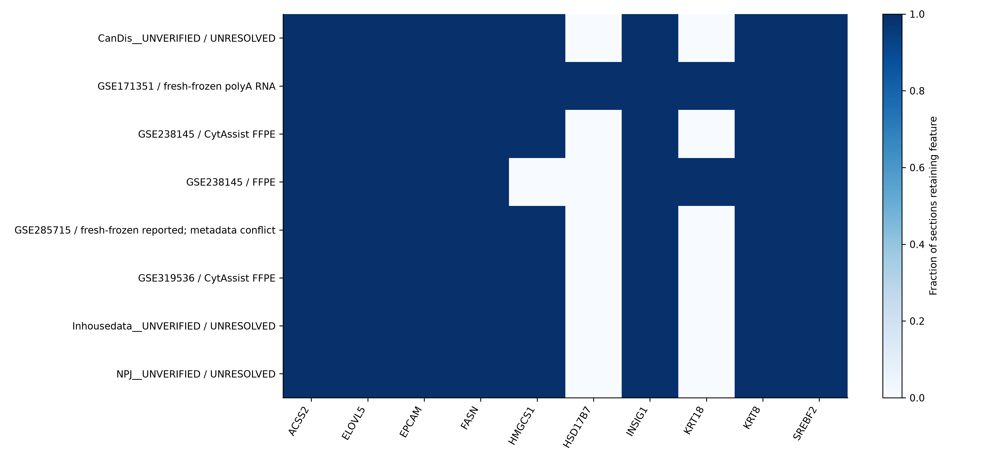
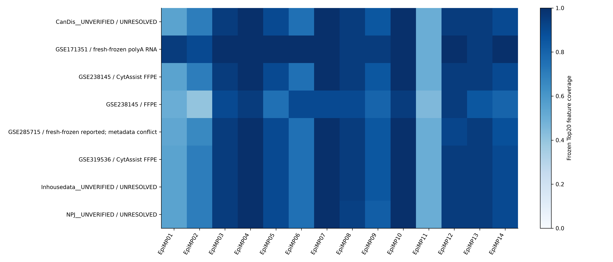
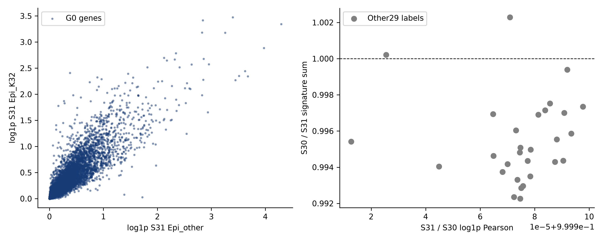
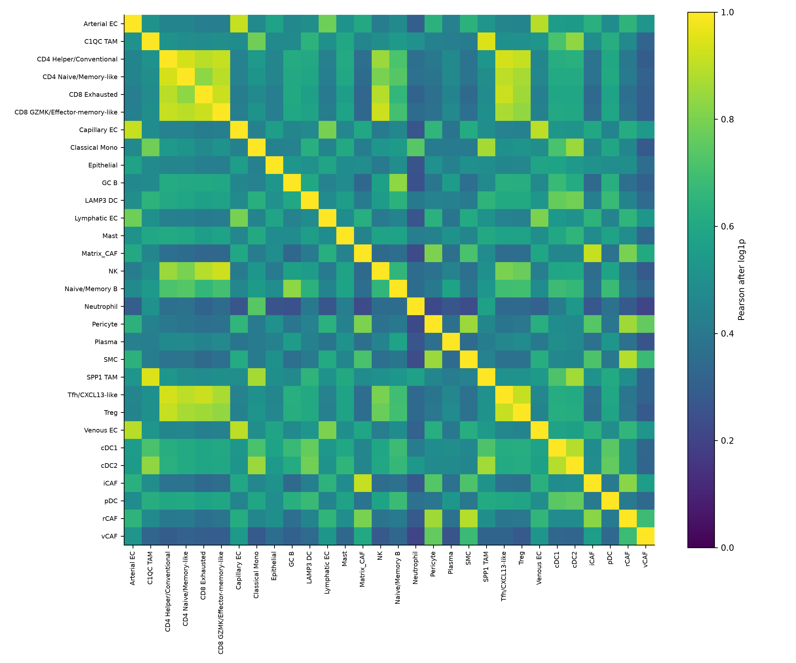
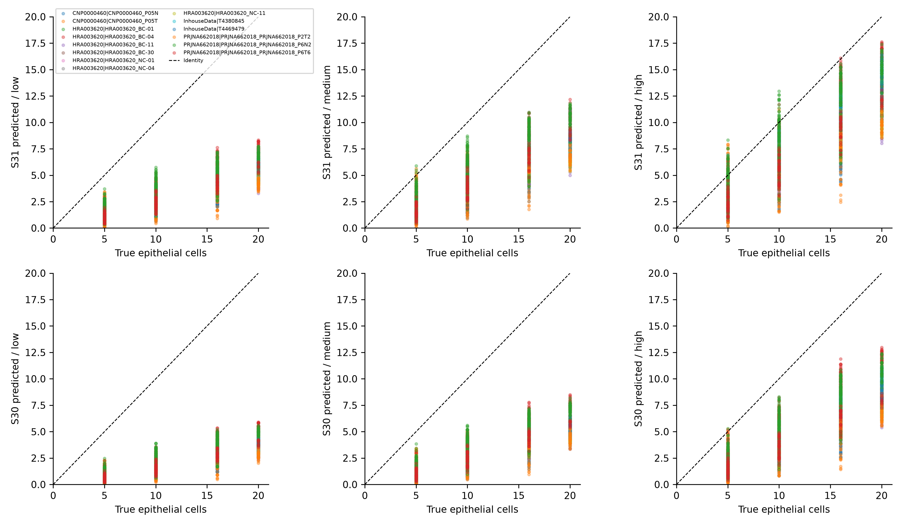
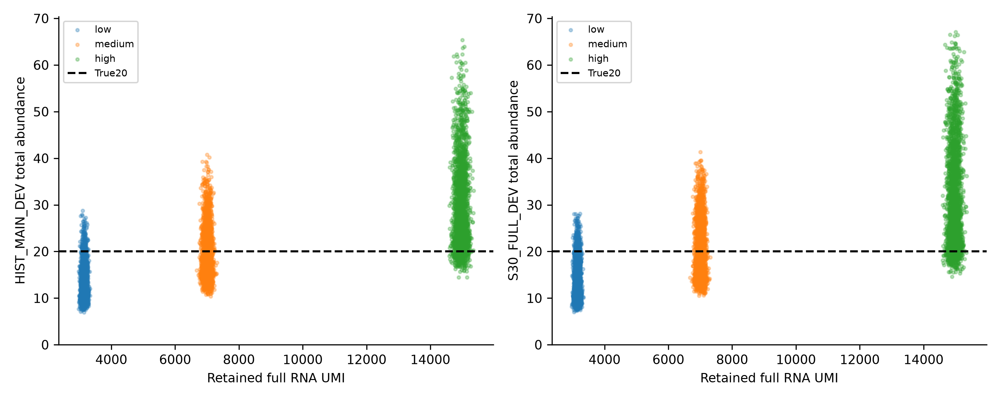
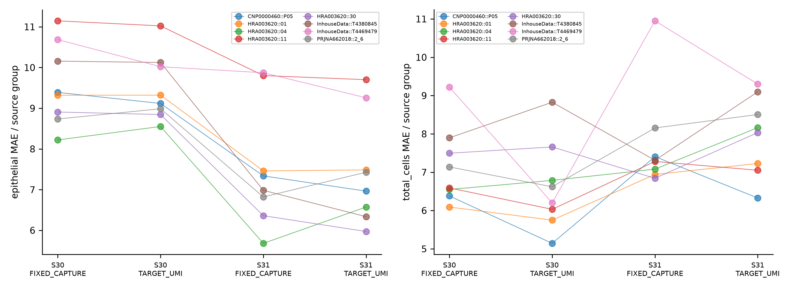
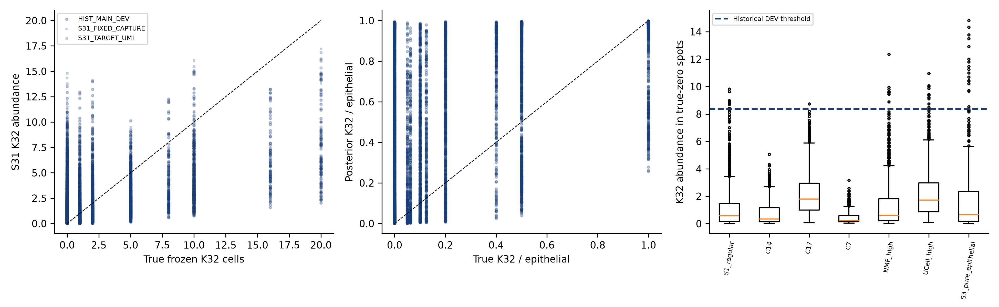
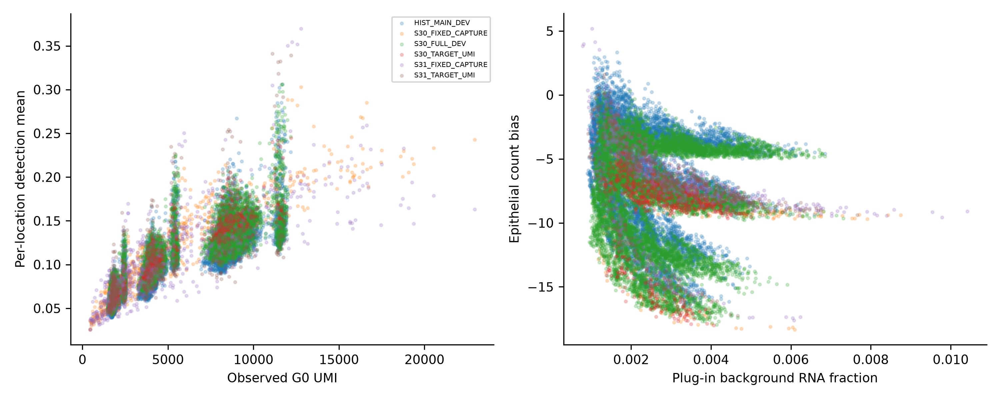
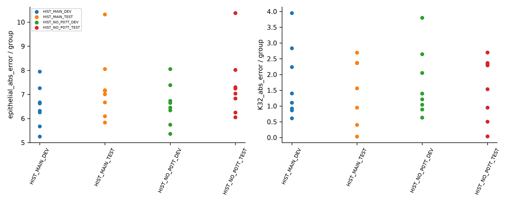
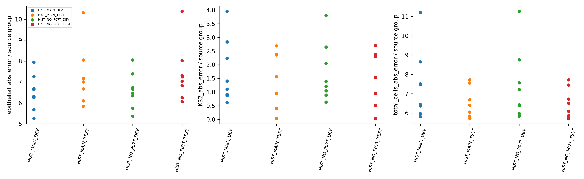
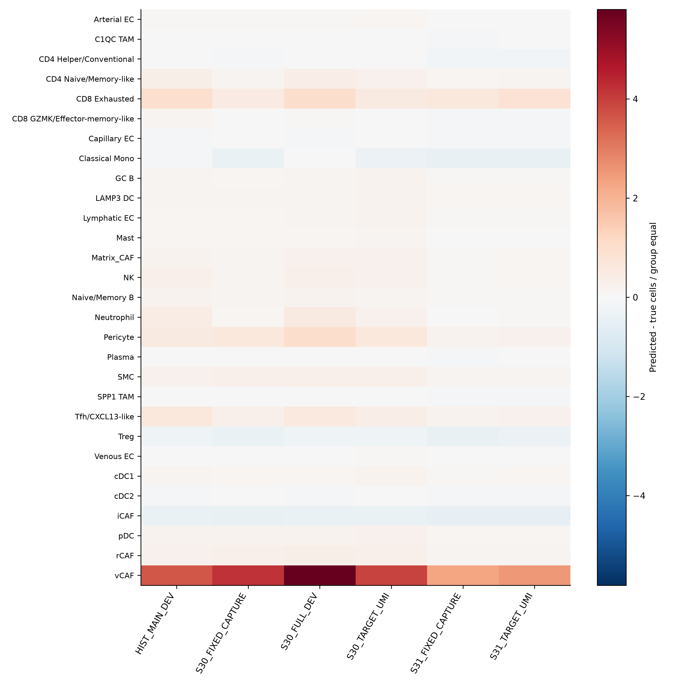
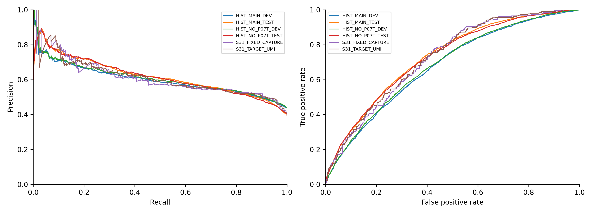
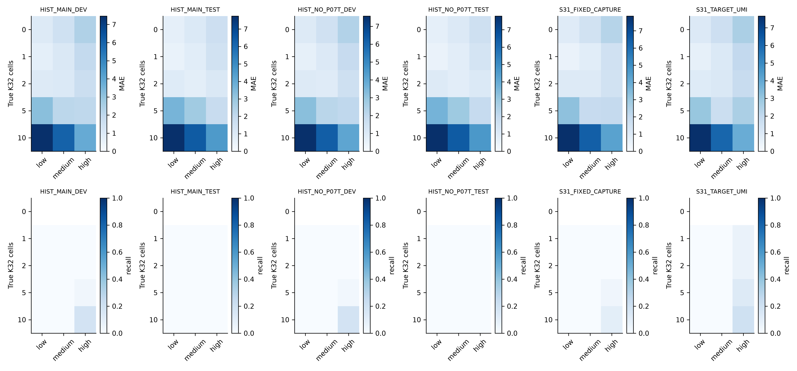
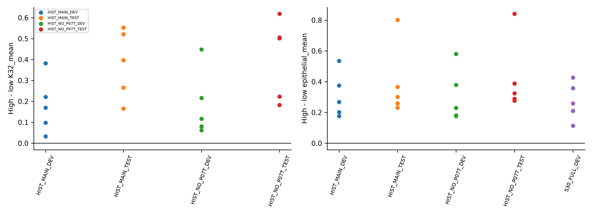
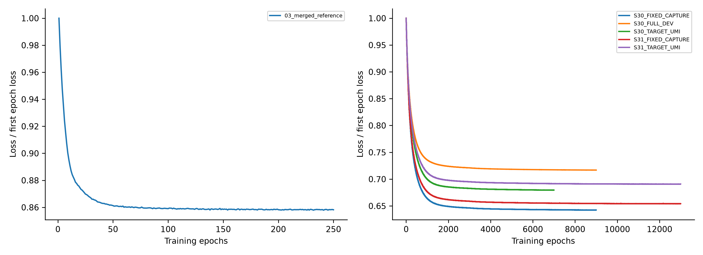
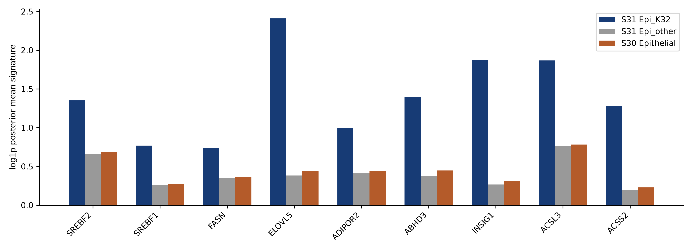
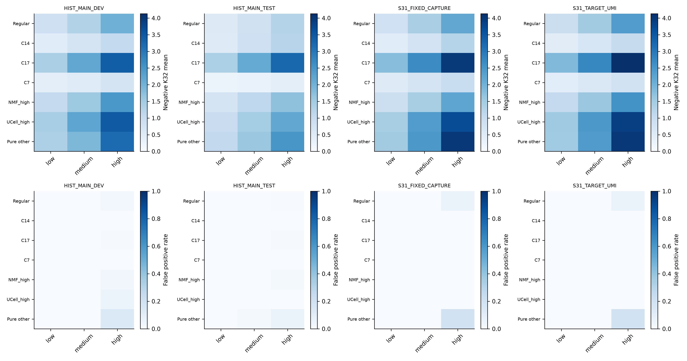
按dataset的全部版本、PNG/PDF与plot_data在07_figures；保留极端值与不可评价说明。
官方证据访问2026-10-10。GSE285715公开feature文件及下载hash随审阅包提供；probeCSV下载失败已记录，不能补作已核验。